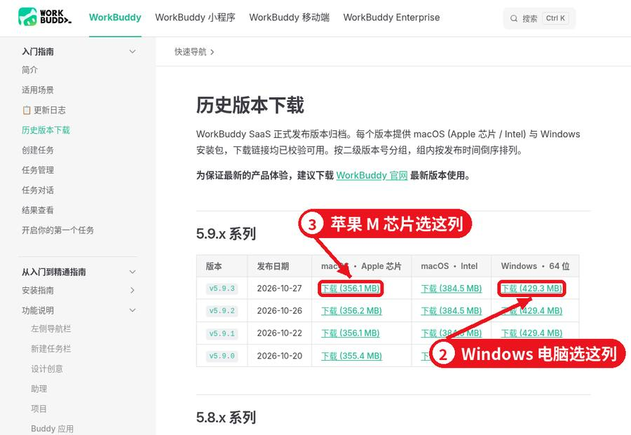
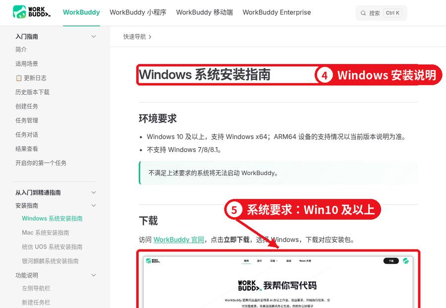
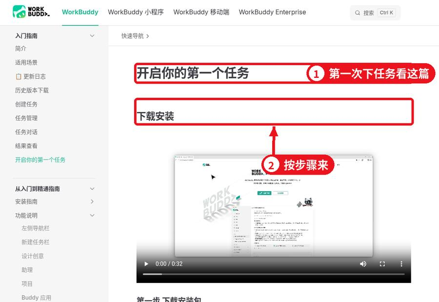
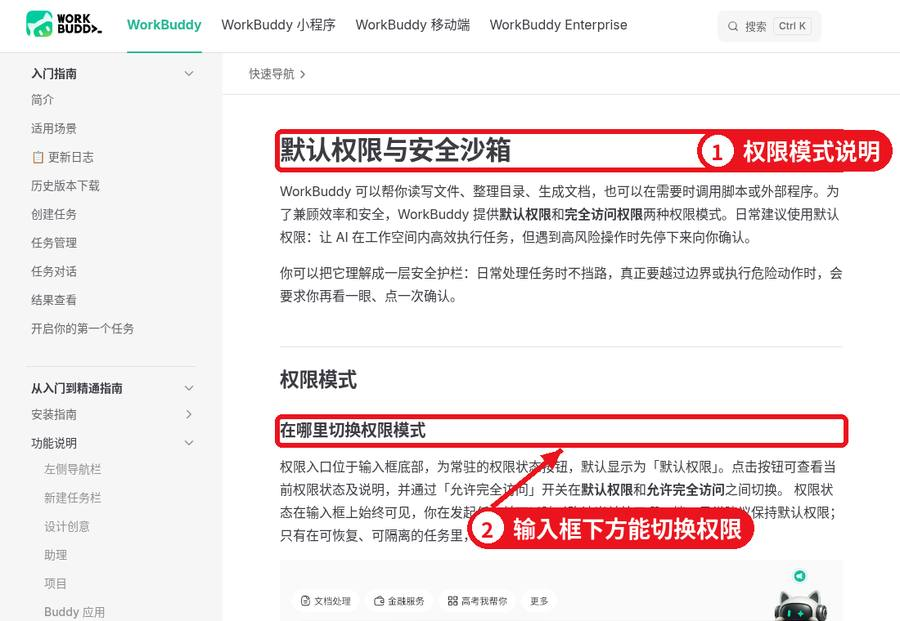
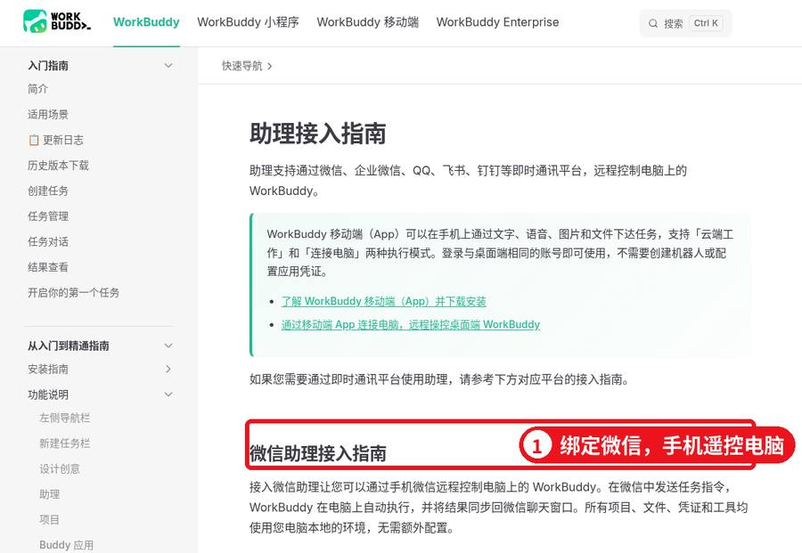
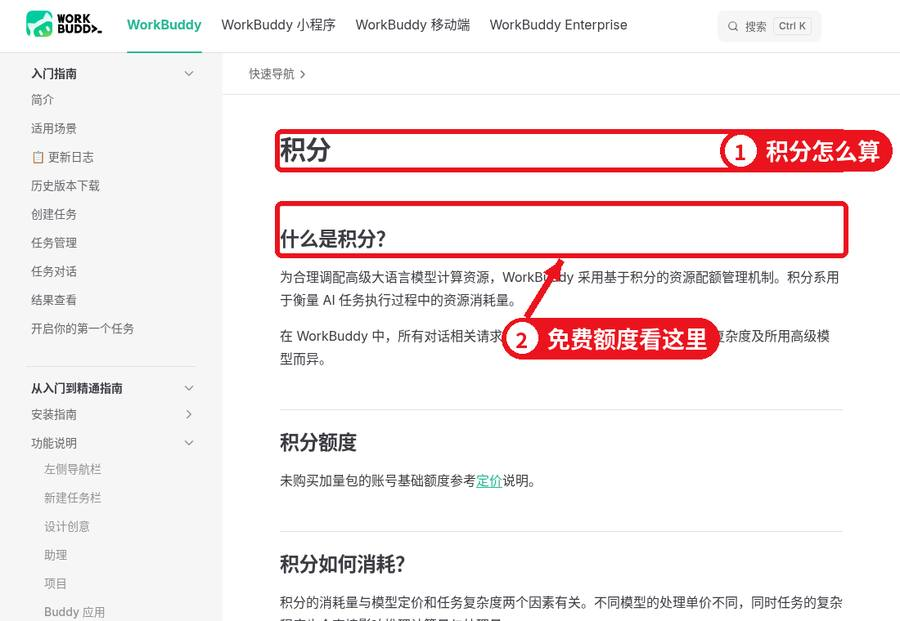
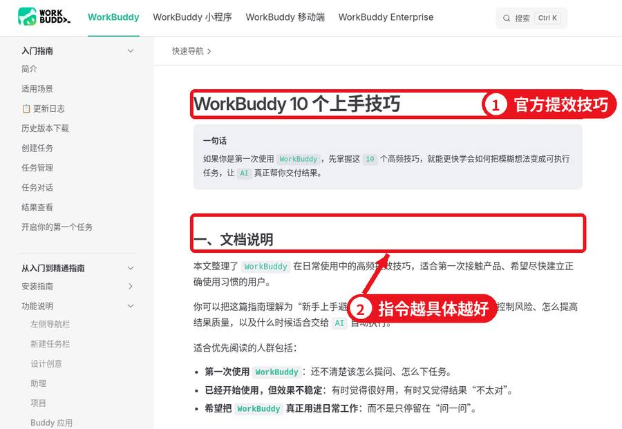

下班后的 WorkBuddy
100 个生活杂事指令，复制就能用
截图可点开看大图 · 原创整理 · 2026 年 11 月 · 建议收藏
WorkBuddy 是腾讯出的电脑助手软件：你用一句话告诉它要做什么，它就在你电脑上动手整理文件、做表格、出文档。很多人只在上班时用，其实下班后的杂事——找发票、给孩子出卷子、整理照片、排旅行计划——它干得更顺手。这篇先教你装好、设好，再给你 10 类 100 条现成指令。
开始前：装好 + 三件事
第 1 步：下载安装
电脑浏览器打开官网 workbuddy.cn，点「立即下载」，它会自动给你匹配 Windows 或 Mac 版本。手机打开官网会显示二维码，那是下载手机端的，电脑端还是要在电脑上下载。
 官网首页：点「立即下载」
官网首页：点「立即下载」
想自己挑版本，就去文档里的「历史版本下载」：Windows 选「64 位」那列；苹果电脑看芯片，M1/M2/M3/M4 选「Apple 芯片」，老款选「Intel」。

历史版本页：按自己电脑选对应那一列
Windows 要 Win10 及以上，Mac 要 macOS 12 及以上。双击安装包一路「下一步」就行，Mac 是把图标拖进「应用程序」。

官方安装说明：先看系统要求
第 2 步：跑通第一个任务
装好后按提示登录账号，在输入框里用一句大白话说你要干嘛，比如「把桌面上的截图按日期分类」。第一次建议照着官方「第一个任务」走一遍。

官方入门：第一次下任务
第 3 步：给它一个专用文件夹
在 D 盘建个文件夹，比如「家务处理间」，要它处理的东西都先复制进去，只授权这一个文件夹。别把整个 C 盘或桌面交给它——它是真的会动你的文件，不是只陪你聊天。
 工作空间说明：授权的文件夹就是它干活的地方
工作空间说明：授权的文件夹就是它干活的地方
第 4 步：权限先用默认
默认权限下，它要删文件、跑命令之前会停下来问你一句。刚开始觉得烦，但这一下能救你很多次。「完全访问」只在不怕弄乱的测试文件夹里短时间开。

权限说明：默认权限会在危险操作前先问你
第 5 步（可选）：绑定手机，人在外面也能用
在设置里找到「助理」，选你常用的聊天软件（微信、企业微信、QQ、飞书、钉钉都支持），按提示绑定。之后在手机上发一句话，家里电脑就开始干活。注意先对一下版本要求。

助理接入：手机遥控电脑，先看版本要求
下面每条都是可以直接复制的指令。里面的文件夹名、日期、金额都是举例，换成你自己的就能用。
1. 电脑文件大扫除
先拿这类练手，最多就是放错地方，挪回来就行。
1. 下载文件夹分类把「工作空间/下载整理」里的文件按文档、图片、安装包、压缩包、视频分到子文件夹。三个月没动过的安装包放进「待确认删除」，先别删，列清单给我看。
2. 乱码文件名改成人话「扫描件」文件夹里的文件都叫 IMG_xxxx。逐个打开看内容，按「年月+内容」改名，比如「2026年5月水电费单」。改之前先给我一张新旧名字对照表。
3. 找重复文件检查「工作空间」里有没有内容一模一样的文件（名字不同也算），按组列出来，每组建议留哪个，写一句理由。
4. Word 批量转 PDF把「奖状证书」里的 Word 全部转成 PDF，原文件不动，PDF 放到新建的「PDF版」文件夹。
5. 多个 PDF 合成一本把「体检报告」里的 PDF 按文件名里的日期从早到晚合成一个文件，叫「全家体检汇总.pdf」，每份前面加一页写清是谁的。
6. 在一堆文件里找一句话我记得「租房资料」里有份文件写了物业电话。帮我找到是哪个文件第几页，把号码和上下文一起发我。
7. 给文件夹写目录把「家庭资料」里每个文件看一遍，新建「目录.md」，按类别写清每个文件是什么、哪年的、有啥用。
8. 换电脑前清点统计「文档」「桌面」「图片」三个位置各有多少文件、多大，挑出合同、证件、照片这类必须备份的，单列一张清单。
9. 照片里的字提出来「说明书照片」里是十几张家电说明书照片，把文字都提出来，每台电器一个 Word，表格还原成表格。
10. 长聊天记录理清楚下面是业主群三百多条聊天记录。帮我理出大家在争哪几件事、各方观点、有没有结论，没结论的标出来。
2. 手机照片和截图
照片多到翻不动的时候最好用。
11. 按月份归档「手机照片」里两千多张图，按拍摄时间分到「2026年1月」这样的文件夹，读不到时间的放「时间不明」，别瞎猜。
12. 挑出糊图和连拍把「旅行照片」里糊的、闭眼的、连拍几乎一样的挑到「待删」，每组连拍留最清楚的一张。
13. 菜谱截图攒成一本「菜谱截图」里每张图的菜名、食材、步骤提出来，做成「家常菜谱.docx」，按荤素汤分类，带目录。
14. 证件照换底换尺寸把「证件照.jpg」换成白底，裁成一寸 295×413 像素，人脸居中；再出一张蓝底二寸。
15. 九宫格和长图「周末野餐」里 9 张照片拼成九宫格，格子间留白边；再竖着拼一张宽 1080 像素的长图。
16. 年度家庭相册从「全年照片」每月挑 3 张最好的，做成 PDF 相册，每页一个月，配一句说明，封面写「我们家的这一年」。
17. 照片压到能上传「报名材料」里的照片都压到 500KB 以内，尺寸不变，放进「压缩版」，原图不动。
18. 截图里的表格转 Excel「账单截图」里每张图的表格都还原成 Excel，一张图一个工作表，数字核对两遍。
19. 给照片批量加日期水印「装修进度」的照片右下角加上拍摄日期小字水印，另存到「带日期」文件夹。
20. 找出某个人的照片「家庭照片」里有很多张，把有外婆的照片单独复制一份到「外婆」文件夹，不确定的单独列出来让我看。
3. 家里的钱和账
账单、发票、保单，一年到头最费脑子的就是这些。
21. 月度开销表把「账单导出」里本月的消费记录汇总成表，按吃饭、交通、购物、孩子、人情分类，算每类合计，画个饼图。
22. 发票整理「发票」文件夹里的电子发票，把开票日期、金额、抬头、事由提出来列成 Excel，按月份合计。
23. 找乱扣费看这三个月的账单，把每月固定扣钱的项目都列出来，标出我可能已经不用的会员和订阅。
24. 保单一览表「保险」里的保单 PDF 都看一遍，列表写清：给谁买的、保什么、多少钱、哪天续费。
25. 房贷提前还款算一算贷款 80 万、30 年、利率 3.2%，已还 5 年。算提前还 10 万后：月供减少和年限缩短两种方式各省多少利息，做成对比表。
26. 年终收支总结把今年 12 个月的开销表合起来，告诉我钱主要花哪了、哪几个月超支、明年哪三项最好控制。
27. 水电燃气对比「水电单」里的账单提出每月用量和金额，做折线图，告诉我哪个月突然变高。
28. 团购接龙变表格下面是群里的接龙记录，整理成表：姓名、门牌、商品、数量、金额，最后算总数。
29. 人情往来账本「礼金记录」的照片和文字整理成表：谁家、什么事、给了多少、哪年，方便以后回礼。
30. 报销材料打包把「出差报销」里的发票和行程单按日期排好，合成一个 PDF，第一页做个汇总表。
4. 孩子上学那些事
31. 默写卷按三年级上册第二单元生字，出一张默写卷，留田字格，另附一份答案页。
32. 错题本「错题照片」里的题目提出来，按知识点分类，每题下面留空，导出可打印的 Word。
33. 口算题批量出出 5 页 100 以内加减混合口算题，每页 50 道，附答案，A4 能直接打印。
34. 课程表做漂亮把下面这张课程表做成彩色 A4 版，每科一个颜色，字大一点贴墙上。
35. 家长群通知汇总下面是这周家长群的消息，把要交的东西、要签的字、截止日期列成清单。
36. 作文素材整理「作文」文件夹里孩子写过的作文，按写人、写事、写景分类，挑出写得好的句子做摘抄本。
37. 英语单词卡把这单元 30 个单词做成可剪裁的单词卡，正面英文，背面中文和例句。
38. 兴趣班费用对比这几家兴趣班的价格、课时、地点整理成对比表，算出每节课单价。
39. 假期作息表给 9 岁孩子做寒假作息表，学习、运动、玩耍都安排上，做成能打印的表。
40. 读书清单按二年级水平推荐 20 本课外书，写一句推荐理由，做成可打勾的清单。
5. 帮爸妈的忙
41. 药品说明书放大版把「药盒照片」里每种药的用法用量、注意事项提出来，做成大字版一页纸，贴在药箱上。
42. 体检报告看懂把爸爸这份体检报告里超出范围的指标列出来，用大白话写清是什么意思、该挂哪个科。仅供参考，不代替医生。
43. 通讯录做大字版「家庭通讯录.xlsx」调成 A4 一页，字号放大到老人能看清，导出 PDF。
44. 手机操作图文说明给我妈写一份「怎么视频通话」的步骤说明，每步一句话，字大，打印出来用。
45. 防骗提醒卡整理最近常见的冒充客服、冒充熟人等骗局，每种一句话说清怎么识别，做成一页提醒卡。
46. 复诊提醒表把爸妈的复诊、拿药时间整理成一张表，按日期排好，提前三天的标红。
47. 老照片整理「老照片扫描」里的照片按年代大致分组，文件名写上能认出的人和地方，认不出的留空。
48. 养老金和医保材料清单按我们本地政策，列出办理退休手续一般要准备哪些材料，做成可打勾清单，提醒我以当地窗口为准。
49. 家用电器保修表「电器发票」里提出购买日期和保修期，列表算出哪些快过保。
50. 节日礼物预算爸妈生日和春节礼物预算 2000，给几个方案，每个方案列清买什么、大概多少钱。
6. 出门玩
51. 三天行程国庆带爸妈去杭州 3 天，老人走不了太多路。排个行程，每天不超过 2 个景点，标出休息点和吃饭地方。
52. 出行清单按 4 口人、5 天海边游，列一份行李清单，分证件、衣物、药品、电子产品，能打勾。
53. 比价表下面是三家酒店的价格、位置、早餐情况，做成对比表，帮我按带孩子方便程度排序。
54. 旅行花费记账把这次旅行的花费截图整理成表，算总数和人均，AA 的话每人给多少。
55. 游记初稿根据「旅行照片」的时间和地点，帮我按天写一份游记草稿，我再改。
56. 自驾路线从南京自驾去黄山，帮我列出路上可以停的服务区和大概时间，提醒哪些路段容易堵。
57. 票据归档把这次出门的车票、门票、酒店单据按日期排好，合成一个 PDF 备查。
58. 景点讲解小抄我们要去西安碑林，给孩子写一份 10 分钟能讲完的讲解小抄，用小学生能听懂的话。
59. 天气和穿衣下周去哈尔滨 4 天，按当地往年这个时候的天气，给全家列穿衣建议。
60. 旅行相册把旅行照片挑 30 张做成 PDF 相册，每页配一句话。
7. 找工作换工作
61. 简历改写按这份岗位要求，帮我把简历里的经历改得更对口，只改表述，不编经历。
62. 岗位对比下面三个 offer 的薪资、通勤、福利整理成对比表，算出每月到手大概多少。
63. 面试问题准备按这个岗位描述，列 15 个可能被问到的问题，每个写一段回答思路。
64. 自我介绍帮我写 1 分钟和 3 分钟两个版本的自我介绍，口语化一点。
65. 求职记录表做一张投递记录表：公司、岗位、投递日期、进度、下一步，方便我跟进。
66. 离职交接清单按我的工作内容列一份交接清单，包括账号、文件、进行中的事和对接人。
67. 作品集整理「作品」文件夹里的东西挑出最好的 10 个，做成一份 PDF 作品集，每个配一段说明。
68. 薪资谈判准备帮我整理谈薪时可以说的理由和底线，写成要点，不超过一页。
69. 行业了解帮我整理一份某某行业的入门介绍：主要公司、常见岗位、需要的技能。
70. 英文邮件帮我写一封得体的英文邮件，感谢面试官并询问进度。
8. 想学点东西
71. 学习计划我想 3 个月学会 Excel 常用函数，每天 30 分钟，帮我排一份按周的计划。
72. 长文章变笔记把「文章」里这篇长文提炼成一页笔记，要点不超过 10 条。
73. 视频字幕变讲义「课程字幕」里的字幕文件整理成讲义，按章节加小标题。
74. 单词本把我这段时间收藏的英文单词去重，加上音标、中文和例句，做成表格。
75. 读书笔记模板做一份读书笔记模板：书名、作者、三个收获、一句金句、能用在哪。
76. 考试倒计时离考试还有 60 天，按这份大纲把内容平均分配，每天学什么写清楚。
77. 知识卡片把这章内容做成 20 张问答卡片，正面问题背面答案。
78. 资料归类「学习资料」里的东西按科目和难度分类，建好文件夹。
79. 模拟题根据这份笔记出 20 道选择题，附答案和解析。
80. 每周复盘根据我这周的学习记录，写一份复盘：做了什么、没做完什么、下周怎么调整。
9. 搞点小副业（合规）
这里只是帮你省时间，挣不挣钱看你自己的手艺和坚持，别信一夜暴富。
81. 商品描述根据这几张手工饰品的照片，写 3 版商品描述，突出材质和尺寸，别夸大。
82. 客户问答整理把这个月客户问过的问题整理成常见问答，方便以后直接回复。
83. 订单统计把「订单导出」里的订单按商品汇总，算出卖得最好的 5 个和每个的利润。
84. 内容选题我做家常菜分享，帮我列 30 个选题，按季节和节日排好。
85. 图文排版把这篇文字排成适合手机看的图文，每段配一句小标题。
86. 报价单按我给的服务项目和价格，做一份清楚的报价单 PDF。
87. 合同要点核对帮我看这份合作协议里关于付款、违约、交付时间的条款，用大白话说清。重要合同请再找专业人士看。
88. 素材库整理「素材」里的图片按主题分类并改名，方便以后找。
89. 成本核算按原材料、包装、快递、时间算出每单成本，告诉我现在的定价利润多少。
90. 周报给自己根据这周的订单和花费，写一份一页的小生意周报。
10. 让它定时盯着
定时任务设好，到点它自己干，结果发到你手机。
91. 每天早上天气提醒每天早上 7 点，查本地天气，提醒我要不要带伞、孩子穿几件。
92. 每周整理下载文件夹每周日晚上 9 点，把「下载」按类型整理一遍，给我一份清单。
93. 账单月报每月 1 号，把上个月账单汇总成表发我。
94. 续费提醒每月 25 号，查保单和会员到期表，下个月到期的提醒我。
95. 孩子作业提醒每周五下午 5 点，汇总这周家长群里提到的作业和要交的东西。
96. 每周备份每周六把「重要资料」复制一份到移动硬盘的备份文件夹，告诉我备份了多少文件。
97. 降价盯梢每天看一次我关注的这几件商品页面上的价格，降到我设的价就提醒我。
98. 读书打卡每天晚上 10 点问我今天读了几页，记到读书表里，周末给我汇总。
99. 家庭日程每周一早上把这周家里的日程（复诊、生日、缴费）整理好发我。
100. 年度总结每年 12 月 31 日，把这一年的账单、照片数量、读书记录汇总成一份家庭年度总结。
 定时任务：设好时间，到点自动执行
定时任务：设好时间，到点自动执行
积分和省钱
它按「积分」计费，新用户有免费额度，每天/每月也会送一些。大任务（比如处理几千张照片）很费积分，建议先拿几个文件试一下，确认效果再全量跑。

积分说明：免费额度和消耗规则看这里
写好指令的 4 个小窍门
- 说清楚范围：哪个文件夹、哪些文件。
- 说清楚结果：要表格、Word 还是 PDF，放哪儿、叫啥名。
- 先预览再动手：改名、删除这类操作，让它先列清单给你确认。
- 原件别动：让它另存一份，原文件保留。

官方技巧页：指令越具体，结果越靠谱
涉及钱、身体、合同的内容，它给的只是整理和参考，最后拍板请找专业的人。家里的证件、照片，记得自己另外备份。
本文为原创整理，截图来自官方公开页面，仅作使用说明。软件功能以官方最新版本为准。